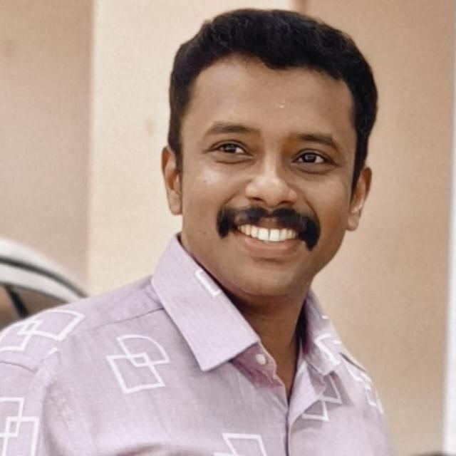

<!DOCTYPE html>
<html lang="en">
<head>
  <meta charset="UTF-8">
  <meta name="viewport" content="width=device-width, initial-scale=1.0, maximum-scale=1.0, user-scalable=no">
  <title>KTET GURU PEDAGOGY TEST</title>
  <style>
  /* Base Reset & Mobile-First Variables */
  * {
    box-sizing: border-box;
    margin: 0;
    padding: 0;
  }

  :root {
    --font-sans: -apple-system, BlinkMacSystemFont, "Segoe UI", Roboto, Helvetica, Arial, sans-serif;
    /* Blue Theme Colors */
    --primary-color: #1E40AF; /* Dark Blue */
    --primary-light: #E0E7FF; /* Light Blue BG */
    --primary-dark: #1E3A8A;  /* Extra Dark Blue */
    --accent-color: #60A5FA;   /* Accent Blue */
    --success-color: #1D9E75;
    --success-bg: #EAF3DE;
    --error-color: #E24B4A;
    --error-bg: #FCEBEB;
    --text-main: #2D3748;
    --text-muted: #718096;
    --border-color: #E2E8F0;
  }

  body {
    background: linear-gradient(135deg, #0F172A 0%, #1E293B 40%, #334155 100%);
    min-height: 100vh;
    font-family: var(--font-sans);
    -webkit-tap-highlight-color: transparent;
  }

  #app {
    padding: 10px;
    width: 100%;
    max-width: 600px;
    margin: 0 auto;
  }

  /* Sticky Header/Top Bar Card */
  .top-bar {
    background: var(--primary-color);
    border-radius: 12px;
    padding: 12px 14px;
    margin-bottom: 16px;
    color: #fff;
    box-shadow: 0 4px 10px rgba(0, 0, 0, 0.15);
    position: sticky;
    top: 10px;
    z-index: 100;
  }

  .top-row {
    display: flex;
    align-items: center;
    justify-content: space-between;
    margin-bottom: 4px;
  }

  .header-profile {
    display: flex;
    align-items: center;
    justify-content: space-between; 
    gap: 10px;
    margin-bottom: 4px;
  }

  .header-text-block {
    display: flex;
    flex-direction: column;
    gap: 2px;
    max-width: 70%;
  }

  /* WhatsApp Actions in Banner */
  .header-actions {
    display: flex;
    align-items: center;
    gap: 8px;
    flex-shrink: 0;
  }

  .whatsapp-btn {
    display: inline-flex;
    align-items: center;
    justify-content: center;
    background-color: #25D366;
    color: #fff;
    text-decoration: none;
    padding: 6px 12px;
    border-radius: 20px;
    font-size: 12px;
    font-weight: 700;
    box-shadow: 0 2px 4px rgba(0,0,0,0.1);
    transition: transform 0.1s ease;
  }

  .whatsapp-btn:active {
    transform: scale(0.95);
  }

  .profile-pic {
    width: 42px;
    height: 42px;
    border-radius: 50%;
    border: 2px solid #fff;
    object-fit: cover;
    box-shadow: 0 2px 4px rgba(0,0,0,0.1);
    flex-shrink: 0;
  }

  .quiz-title {
    font-size: 15px;
    font-weight: 700;
    color: #fff;
    line-height: 1.3;
    text-transform: uppercase;
    letter-spacing: 0.5px;
  }

  .q-badge {
    background: #3B82F6;
    color: #EFF6FF;
    font-size: 11px;
    font-weight: 600;
    padding: 4px 10px;
    border-radius: 20px;
  }

  .timer-pill {
    display: flex;
    align-items: center;
    gap: 6px;
    background: var(--primary-dark);
    border-radius: 20px;
    padding: 4px 12px;
  }

  .timer-label {
    font-size: 10px;
    color: #93C5FD;
    text-transform: uppercase;
    font-weight: 600;
    letter-spacing: 0.5px;
  }

  .timer-txt {
    font-size: 16px;
    font-weight: 700;
    color: #fff;
    font-variant-numeric: tabular-nums;
  }

  .timer-txt.red {
    color: #F87171;
    animation: pulse 1s infinite alternate;
  }

  @keyframes pulse {
    from { opacity: 1; }
    to { opacity: 0.7; }
  }

  /* Question Card Wrapper */
  .q-container {
    background: #fff;
    border: 1px solid var(--border-color);
    border-radius: 12px;
    padding: 16px;
    margin-bottom: 16px;
    box-shadow: 0 2px 4px rgba(0,0,0,0.02);
  }

  .q-num {
    font-size: 11px;
    color: var(--primary-color);
    font-weight: 600;
    background: var(--primary-light);
    display: inline-block;
    padding: 2px 8px;
    border-radius: 20px;
    text-transform: uppercase;
    letter-spacing: 0.5px;
  }

  .q-text {
    font-size: 15px;
    font-weight: 600;
    color: var(--text-main);
    line-height: 1.5;
    margin-top: 8px;
    margin-bottom: 14px;
    word-break: break-word;
  }

  .q-translation {
    font-size: 13.5px;
    color: #4A5568;
    font-weight: 500;
    line-height: 1.45;
    margin-bottom: 12px;
    background: #F7FAFC;
    padding: 8px 10px;
    border-radius: 6px;
    border-left: 3px solid var(--accent-color);
  }

  /* Options Layout */
  .opts {
    display: flex;
    flex-direction: column;
    gap: 10px;
  }

  .opt {
    display: flex;
    align-items: center;
    gap: 12px;
    padding: 12px 14px;
    border-radius: 10px;
    cursor: pointer;
    border: 2px solid var(--border-color);
    background: #fff;
    transition: all 0.15s ease;
    min-height: 48px;
  }

  .opt-key {
    width: 26px;
    height: 26px;
    border-radius: 50%;
    display: flex;
    align-items: center;
    justify-content: center;
    font-size: 12px;
    font-weight: 700;
    flex-shrink: 0;
  }

  .opt-key.A { background: #E6F1FB; color: #0C447C; }
  .opt-key.B { background: #FAEEDA; color: #633806; }
  .opt-key.C { background: #FBEAF0; color: #72243E; }
  .opt-key.D { background: #EAF3DE; color: #27500A; }

  .opt-txt {
    font-size: 13.5px;
    color: var(--text-main);
    font-weight: 500;
    line-height: 1.4;
    word-break: break-word;
  }

  /* Selection States */
  .opt.unanswered:active {
    background: var(--primary-light);
    border-color: #60A5FA;
  }

  .opt.correct-ans {
    border-color: var(--success-color);
    background: var(--success-bg);
    pointer-events: none;
  }
  .opt.correct-ans .opt-key {
    background: var(--success-color);
    color: #fff;
  }
  .opt.correct-ans .opt-txt {
    color: #085041;
    font-weight: 600;
  }

  .opt.wrong-ans {
    border-color: var(--error-color);
    background: var(--error-bg);
    pointer-events: none;
  }
  .opt.wrong-ans .opt-key {
    background: var(--error-color);
    color: #fff;
  }
  .opt.wrong-ans .opt-txt {
    color: #791F1F;
  }

  .opt.neutral-locked {
    pointer-events: none;
    opacity: 0.5;
  }

  /* Explanations block */
  .exp-box {
    border-radius: 10px;
    padding: 12px 14px;
    margin-top: 14px;
    font-size: 13px;
    line-height: 1.5;
    box-shadow: inset 2px 0 0px rgba(0,0,0,0.1);
    word-break: break-word;
  }

  .exp-box.correct {
    background: var(--success-bg);
    border: 1px solid #5DCAA5;
    color: #085041;
  }

  .exp-box.wrong {
    background: var(--error-bg);
    border: 1px solid #F09595;
    color: #791F1F;
  }

  .exp-label {
    font-weight: 700;
    margin-bottom: 4px;
  }

  /* Bottom Submit Button Container */
  .action-container {
    margin-top: 8px;
    margin-bottom: 24px;
  }

  .btn-submit-all {
    width: 100%;
    padding: 16px;
    border-radius: 12px;
    border: none;
    font-size: 16px;
    font-weight: 700;
    cursor: pointer;
    background: #2563EB;
    color: #fff;
    box-shadow: 0 4px 6px rgba(0,0,0,0.1);
    transition: background 0.2s;
  }

  .btn-submit-all:active {
    transform: scale(0.99);
  }

  /* Result Dashboards */
  .result-top {
    background: var(--primary-color);
    border-radius: 12px;
    padding: 24px 14px;
    text-align: center;
    margin-bottom: 12px;
    color: #fff;
  }

  .score-ring {
    width: 90px;
    height: 90px;
    border-radius: 50%;
    border: 4px solid var(--accent-color);
    display: flex;
    flex-direction: column;
    align-items: center;
    justify-content: center;
    margin: 0 auto 12px;
  }

  .score-big {
    font-size: 30px;
    font-weight: 700;
    color: #fff;
    line-height: 1;
  }

  .score-sub {
    font-size: 12px;
    color: #93C5FD;
    margin-top: 2px;
  }

  .result-label {
    font-size: 18px;
    font-weight: 700;
    margin-bottom: 4px;
  }

  .result-sub {
    font-size: 13px;
    color: #93C5FD;
  }

  .stats-grid {
    display: grid;
    grid-template-columns: repeat(3, 1fr);
    gap: 8px;
    margin-bottom: 16px;
  }

  .stats-grid {
    display: grid;
    grid-template-columns: repeat(3, 1fr);
    gap: 8px;
    margin-bottom: 16px;
  }

  .stat-c {
    border-radius: 10px;
    padding: 10px 6px;
    text-align: center;
    box-shadow: 0 1px 3px rgba(0,0,0,0.02);
  }

  .stat-c.green { background: var(--success-bg); }
  .stat-c.red { background: var(--error-bg); }
  .stat-c.gray { background: #EDF2F7; }

  .stat-n {
    font-size: 20px;
    font-weight: 700;
  }

  .stat-c.green .stat-n { color: var(--success-color); }
  .stat-c.red .stat-n { color: var(--error-color); }
  .stat-c.gray .stat-n { color: var(--text-main); }

  .stat-l {
    font-size: 11px;
    color: var(--text-muted);
    font-weight: 500;
    margin-top: 2px;
  }

  /* Review Cards Section */
  .review-title {
    font-size: 14px;
    font-weight: 700;
    color: var(--text-main);
    margin: 16px 0 8px;
    padding-left: 2px;
  }

  .r-card {
    border-radius: 8px;
    border: 1px solid var(--border-color);
    padding: 14px;
    margin-bottom: 10px;
    background: #fff;
    word-break: break-word;
  }

  .r-card.rc { border-left: 4px solid var(--success-color); }
  .r-card.rw { border-left: 4px solid var(--error-color); }
  .r-card.rs { border-left: 4px solid var(--text-muted); }

  .r-head {
    display: flex;
    align-items: center;
    gap: 8px;
    margin-bottom: 8px;
  }

  .r-badge {
    font-size: 10px;
    font-weight: 700;
    padding: 2px 8px;
    border-radius: 20px;
    text-transform: uppercase;
  }

  .r-badge.rc { background: var(--success-bg); color: #27500A; }
  .r-badge.rw { background: var(--error-bg); color: #791F1F; }
  .r-badge.rs { background: #EDF2F7; color: var(--text-muted); }

  .r-qnum {
    font-size: 12px;
    color: var(--text-muted);
    font-weight: 600;
  }

  .r-qtxt {
    font-size: 13.5px;
    font-weight: 600;
    color: var(--text-main);
    line-height: 1.45;
    margin-bottom: 8px;
  }

  .r-ans {
    font-size: 12px;
    padding: 6px 10px;
    border-radius: 6px;
    margin-bottom: 4px;
    font-weight: 500;
  }

  .r-ans.correct { background: var(--success-bg); color: #085041; }
  .r-ans.wrong { background: var(--error-bg); color: #791F1F; }

  .r-exp {
    font-size: 12px;
    color: var(--text-muted);
    line-height: 1.5;
    border-top: 1px solid var(--border-color);
    padding-top: 8px;
    margin-top: 8px;
  }

  .restart-btn {
    width: 100%;
    padding: 14px;
    background: var(--primary-color);
    color: #fff;
    border: none;
    border-radius: 10px;
    font-size: 15px;
    font-weight: 600;
    cursor: pointer;
    margin-top: 10px;
  }

  /* Specific Adjustments for smaller screens */
  @media(max-width: 400px) {
    .quiz-title { font-size: 13px; }
    .whatsapp-btn { font-size: 10px; padding: 5px 8px; }
    .profile-pic { width: 36px; height: 36px; }
    .header-text-block { max-width: 65%; }
  }

  @media(max-width: 350px) {
    .quiz-title { font-size: 11px; }
    .timer-txt { font-size: 14px; }
    .opt-txt { font-size: 12.5px; }
    .whatsapp-btn { font-size: 9px; padding: 4px 6px; }
  }
  </style>
</head>
<body>

<div id="app">
  <div id="view"></div>
</div>

<script>
const sndCorrect = new Audio("applause.mp3");

const Q = [
  {
    q: "\"A project in a problematic act carried to completion into natural setting\" - who said this?",
    t: "\"പ്രശ്നസങ്കീർണ്ണമായ ഒരു പ്രവർത്തനം അതിന്റെ സ്വാഭാവിക പശ്ചാത്തലത്തിൽ പൂർത്തീകരിക്കുന്നതാണ് പ്രോജക്റ്റ്\" - ഇത് ആരുടെ പ്രസ്താവനയാണ്?",
    o: ["W.H. Kilpatrick", "I.A. Stevenson", "Ballard", "John Dewey"],
    a: 1,
    e: "പ്രോജക്ട് രീതിയെക്കുറിച്ചുള്ള ഈ പ്രശസ്തമായ നിർവചനം നൽകിയത് ഐ. എ. സ്റ്റീവൻസൺ ആണ്. സ്വാഭാവികമായ ചുറ്റുപാടിൽ പ്രശ്നങ്ങൾ പരിഹരിക്കുന്നതിനാണ് അദ്ദേഹം തന്റെ നിർവചനത്തിൽ മുൻഗണന നൽകിയത്."
  },
  {
    q: "In order to prepare a lesson plan the teacher has to go through which of the following documents?",
    t: "ഒരു ലെസ്സൺ പ്ലാൻ തയ്യാറാക്കാൻ അധ്യാപകൻ താഴെ പറയുന്ന ഏതെല്ലാം രേഖകൾ പരിശോധിക്കേണ്ടതുണ്ട്?",
    o: ["Textbook", "Teacher Text", "Reference Books", "All of the above"],
    a: 3,
    e: "ഒരു മികച്ച ലെസ്സൺ പ്ലാൻ (പാഠസൂത്രണം) തയ്യാറാക്കാൻ അധ്യാപകന് ഈ മൂന്ന് രേഖകളും ആവശ്യമാണ്. പ്രധാന വിവരങ്ങൾക്കായി പാഠപുസ്തകവും (Textbook), ബോധനരീതികൾക്കായി അധ്യാപക സഹായിയും (Teacher Text), കൂടുതൽ ആഴത്തിലുള്ള അറിവിനായി റഫറൻസ് പുസ്തകങ്ങളും (Reference Books) പരിശോധിക്കേണ്ടതുണ്ട്."
  },
  {
    q: "An ancient coin is not a useful material to discuss:",
    t: "പുരാതനമായ ഒരു നാണയം താഴെ പറയുന്ന ഏത് കാര്യത്തെക്കുറിച്ച് ചർച്ച ചെയ്യാനാണ് ഉപയോഗപ്രദമല്ലാത്തത്?",
    o: ["about the language inscribed in it.", "on the material by which it is made.", "on the music instrument shown in it.", "about the barter system."],
    a: 3,
    e: "ബാർട്ടർ സമ്പ്രദായം (Barter system) എന്നാൽ പണം ഉപയോഗിക്കാതെ സാധനങ്ങൾക്ക് പകരം സാധനങ്ങൾ കൈമാറുന്ന രീതിയാണ്. നാണയങ്ങൾ എന്നത് പണത്തെ അടിസ്ഥാനമാക്കിയുള്ള സമ്പദ്‌വ്യവസ്ഥയുടെ ഭാഗമായതുകൊണ്ട്, ബാർട്ടർ സമ്പ്രദായത്തെക്കുറിച്ച് പഠിപ്പിക്കാൻ നാണയങ്ങൾ ഉപയോഗപ്രദമല്ല."
  },
  {
    q: "What is positive in relation to textbooks?",
    t: "പാഠപുസ്തകങ്ങളുമായി ബന്ധപ്പെട്ട് ശരിയായ (Positive) പ്രസ്താവന ഏതാണ്?",
    o: ["There is no research before preparing a textbook", "No practising teachers were connected for making it.", "It is not an accumulation of past knowledge only.", "It is difficult to incorporate current affairs in it."],
    a: 2,
    e: "ആധുനിക പാഠപുസ്തകങ്ങൾ വെറും പഴയ അറിവുകളുടെയോ വിവരങ്ങളുടെയോ മാത്രം ശേഖരമല്ല. അവ കുട്ടികളിൽ ചിന്താശേഷിയും പുതിയ കഴിവുകളും പ്രവർത്തനങ്ങളും വളർത്താൻ സഹായിക്കുന്ന രീതിയിലാണ് രൂപകൽപ്പന ചെയ്തിരിക്കുന്നത്."
  },
  {
    q: "Terminal evaluation is an example of:",
    t: "ടെർമിനൽ മൂല്യനിർണ്ണയം (Terminal evaluation) താഴെ പറയുന്നവയിൽ ഏതിന് ഉദാഹരണമാണ്?",
    o: ["Continuous and comprehensive evaluation", "Assessment of learning", "Assessment for learning", "Assessment as learning"],
    a: 1,
    e: "ഒരു നിശ്ചിത കോഴ്സിന്റെയോ ടേമിന്റെയോ അവസാനം വിദ്യാർത്ഥി എന്ത് നേടി എന്ന് വിലയിരുത്തുന്നതിനെയാണ് 'പഠനത്തിന്റെ മൂല്യനിർണ്ണയം' (Assessment of learning അല്ലെങ്കിൽ Summative assessment) എന്ന് വിളിക്കുന്നത്. ടേം പരീക്ഷകൾ (Terminal Evaluation) ഇതിന് ഉദാഹരണമാണ്."
  },
  {
    q: "A teacher asks her students to bring their ration cards in the classroom and initiates a group discussion on the preparation of a family budget. What type of learning occurs in the classroom? Find the most appropriate answer.",
    t: "ഒരു അധ്യാപിക കുട്ടികളോട് റേഷൻ കാർഡ് ക്ലാസിൽ കൊണ്ടുവരാൻ ആവശ്യപ്പെടുകയും കുടുംബ ബഡ്ജറ്റ് തയ്യാറാക്കുന്നതിനെക്കുറിച്ച് ഒരു ഗ്രൂപ്പ് ചർച്ച ആരംഭിക്കുകയും ചെയ്യുന്നു. ഇവിടെ ഏതുതരം പഠനമാണ് നടക്കുന്നത്?",
    o: ["Individualistic learning", "Constructivist learning", "Social Constructivist learning", "Non-associative learning"],
    a: 2,
    e: "റേഷൻ കാർഡ് പോലുള്ള യഥാർത്ഥ ജീവിതസാഹചര്യങ്ങളിലെ ഒരു വസ്തു ഉപയോഗിച്ച്, കുട്ടികൾ ഗ്രൂപ്പായി ചർച്ച ചെയ്ത് ബഡ്ജറ്റിനെക്കുറിച്ച് അറിവ് നിർമ്മിക്കുന്നതിലൂടെ ഇവിടെ 'സോഷ്യൽ കൺസ്ട്രക്റ്റിവിസ്റ്റ് ലേണിംഗ്' (സാമൂഹിക ജ്ഞാനനിർമ്മിതിവാദം) ആണ് നടക്കുന്നത്."
  },
  {
    q: "Who proposed advanced organiser model of teaching?",
    t: "ബോധനശാസ്ത്രത്തിലെ അഡ്വാൻസ്ഡ് ഓർഗനൈസർ മോഡൽ (Advanced Organiser Model) ആവിഷ്കരിച്ചത് ആരാണ്?",
    o: ["David Paul Ausubel", "Bruce Joyce", "Marsha Well", "Emily Calhoun"],
    a: 0,
    e: "പുതിയ വിവരങ്ങൾ കുട്ടികൾക്ക് എളുപ്പത്തിൽ ഉൾക്കൊള്ളാൻ പാകത്തിൽ, പുതിയ പാഠഭാഗം തുടങ്ങുന്നതിന് മുൻപ് തന്നെ അതിന്റെ ഘടന മുൻകൂട്ടി നൽകുന്ന ബോധന മാതൃകയാണ് അഡ്വാൻസ്ഡ് ഓർഗനൈസർ മോഡൽ. ഇത് ആവിഷ്കരിച്ചത് ഡേവിഡ് പോൾ ഔസുബെൽ ആണ്."
  },
  {
    q: "In new history books, time related concepts like BC and AD are changed as BCE and CE. What is the reason behind this change?",
    t: "പുതിയ ചരിത്ര പുസ്തകങ്ങളിൽ BC, AD എന്നിവയ്ക്ക് പകരം BCE, CE എന്ന് മാറ്റാനുള്ള കാരണം എന്താണ്?",
    o: ["Ideas are changed every now and then.", "Because of the ICT related modernisation.", "Secularisation of historical ideas", "Relation with mathematics."],
    a: 2,
    e: "ചരിത്രപരമായ കാലഗണനയെ ഏതെങ്കിലും പ്രത്യേക മതവുമായി മാത്രം ബന്ധപ്പെടുത്താതെ കൂടുതൽ മതേതരവത്കരിക്കുന്നതിന്റെ (Secularisation) ഭാഗമായാണ് BC (Before Christ) എന്നതിന് പകരം BCE (Before Common Era) എന്നും, AD (Anno Domini) എന്നതിന് പകരം CE (Common Era) എന്നും മാറ്റിയത്."
  },
  {
    q: "Who is related to a whole child approach that emphasises the development of all aspects of a person, including the head heart and hands?",
    t: "തലച്ചോറ്, ഹൃദയം, കൈകൾ (Head, Heart, and Hands) എന്നിവയുൾപ്പെടെ ഒരു വ്യക്തിയുടെ എല്ലാ വശങ്ങളുടെയും വികാസത്തിന് പ്രാധാന്യം നൽകുന്ന 'ഹോൾ ചൈൽഡ്' സമീപനവുമായി ബന്ധപ്പെട്ടിരിക്കുന്നത് ആരാണ്?",
    o: ["Jean Piaget", "Pestalozzi", "Henrichsen", "C.G. Jung"],
    a: 1,
    e: "ഒരു കുട്ടിയുടെ സമഗ്രമായ വികാസത്തിന് തലച്ചോറ് (Head - ബുദ്ധി), ഹൃദയം (Heart - വികാരം/ധാർമ്മികത), കൈകൾ (Hands - കായികം/പ്രവർത്തനം) എന്നിവയുടെ വികാസം ഒരുപോലെ പ്രധാനമാണെന്ന് പറഞ്ഞത് പ്രശസ്ത വിദ്യാഭ്യാസ ചിന്തകനായ പെസ്റ്റലോസി (Pestalozzi) ആണ്."
  },
  {
    q: "The highest level regarding Direct Concrete Experience put forward by Edgar Dale in his Cone of Experiences is:",
    t: "എഡ്ഗർ ഡെയ്‌ലിന്റെ അനുഭവ ശങ്കുവിൽ (Cone of Experiences) ഏറ്റവും ഉയർന്ന തലത്തിലുള്ള 'നേരിട്ടുള്ള കോൺക്രീറ്റ് അനുഭവം' നൽകുന്നത് ഏതാണ്?",
    o: ["Verbal symbols", "Visual symbols", "Contrived Experience", "Real Direct Experience"],
    a: 3,
    e: "എഡ്ഗർ ഡെയ്‌ലിന്റെ അനുഭവ ശങ്കുവിന്റെ (Cone of Experience) ഏറ്റവും താഴത്തെ തട്ടിൽ വരുന്നത് 'Real Direct Experience' അഥവാ യഥാർത്ഥ നേരിട്ടുള്ള അനുഭവങ്ങളാണ്. കുട്ടികൾക്ക് ഏറ്റവും കൂടുതൽ കൃത്യമായ അറിവും ഉയർന്ന തോതിലുള്ള കോൺക്രീറ്റ് അനുഭവവും നൽകുന്നത് ഇതാണ്."
  },
  {
    q: "Find the odd one out regarding the fundamental principles of Programmed Learning:",
    t: "പ്രോഗ്രാംഡ് ലേണിംഗിന്റെ (Programmed Learning) അടിസ്ഥാന തത്വങ്ങളിൽ പെടാത്തത് ഏതാണ്?",
    o: ["Small steps", "Appropriateness", "Immediate re-inforcement", "Self pacing"],
    a: 1,
    e: "ബി.എഫ്. സ്കിന്നറുടെ പ്രോഗ്രാംഡ് ലേണിംഗിന്റെ പ്രധാന തത്വങ്ങൾ ചെറിയ ഘട്ടങ്ങൾ (Small steps), പെട്ടെന്നുള്ള പുനർബലനം (Immediate reinforcement), സ്വന്തം വേഗതയിലുള്ള പഠനം (Self-pacing) എന്നിവയാണ്. ഇതിൽ 'Appropriateness' എന്നൊരു തത്വം ഉൾപ്പെടുന്നില്ല."
  },
  {
    q: "Read the clues regarding a method and identify it:",
    t: "താഴെ നൽകിയിരിക്കുന്ന സൂചനകൾ വിശകലനം ചെയ്ത് ബോധനരീതി ഏതാണെന്ന് കണ്ടെത്തുക:\n- The student has to listen it very carefully (വിദ്യാർത്ഥി വളരെ ശ്രദ്ധയോടെ കേൾക്കേണ്ടതുണ്ട്)\n- ICT aids may not be incorporated (ഐസിടി സഹായങ്ങൾ ഉൾപ്പെടുത്തണമെന്നില്ല)\n- Saves time (സമയലാഭമുണ്ട്)\n- Coverage of syllabus in time (സിലബസ് കൃത്യസമയത്ത് തീർക്കാൻ സാധിക്കും)",
    o: ["Discussion method", "Project method", "Discovery method", "Lecture method"],
    a: 3,
    e: "പ്രഭാഷണ രീതി (Lecture method) അധ്യാപക കേന്ദ്രീകൃതമാണ്. ഇതിൽ കുട്ടികൾ ശ്രദ്ധയോടെ കേട്ടിരിക്കുകയാണ് ചെയ്യുന്നത്. സാങ്കേതികവിദ്യയുടെ സഹായമില്ലാതെ തന്നെ കുറഞ്ഞ സമയത്തിനുള്ളിൽ കൂടുതൽ സിലബസ് തീർക്കാൻ ഈ രീതി സഹായിക്കുന്നു."
  },
  {
    q: "Which among the following can not be considered as a principle of curriculum construction?",
    t: "താഴെ പറയുന്നവയിൽ ഏതാണ് പാഠ്യപദ്ധതി നിർമ്മാണത്തിന്റെ (Curriculum construction) തത്വമായി കണക്കാക്കാൻ കഴിയാത്തത്?",
    o: ["Principle of child centrism", "Principle of relation with life", "Principle of forward looking", "Principle of no change"],
    a: 3,
    e: "പാഠയപദ്ധതി (Curriculum) എപ്പോഴും മാറുന്ന സമൂഹത്തിനനുസരിച്ച് മാറിക്കൊണ്ടിരിക്കുന്നതും ഫ്ലെക്സിബിളും ആയിരിക്കണം. അതിനാൽ 'Principle of no change' (മാറ്റമില്ലായ്മയുടെ തത്വം) എന്നത് പാഠ്യപദ്ധതി നിർമ്മാണത്തിന്റെ തത്വമല്ല."
  },
  {
    q: "Find the odd one out.",
    t: "കൂട്ടത്തിൽ പെടാത്തത് കണ്ടെത്തുക.",
    o: ["Radio", "Tape recorder", "Teaching Machine", "Epidiascope"],
    a: 3,
    e: "റേഡിയോ, ടേപ്പ് റിക്കോർഡർ എന്നിവ ശ്രവണ സഹായികളാണ് (Audio aids). എന്നാൽ എപ്പിഡിയാസ്കോപ്പ് (Epidiascope) എന്നത് ചിത്രങ്ങളും മറ്റും സ്ക്രീനിൽ കാണിക്കാൻ ഉപയോഗിക്കുന്ന ഒരു ദൃശ്യ സഹായി (Visual aid) ആണ്."
  },
  {
    q: "The emotional energies are released as a safety valve through sports. What type of value is most suitable related to this?",
    t: "കായിക വിനോദങ്ങളിലൂടെ വൈകാരിക ഊർജ്ജം ഒരു സുരക്ഷാ വാൽവ് പോലെ പുറന്തള്ളപ്പെടുന്നു. ഇതുമായി ബന്ധപ്പെട്ട് ഏറ്റവും അനുയോജ്യമായ മൂല്യം (Value) ഏതാണ്?",
    o: ["Leadership", "Cultural value", "Psychological value", "Aesthetic value"],
    a: 2,
    e: "കായിക വിനോദങ്ങളിലൂടെ മനസ്സിലെ അമിതമായ വൈകാരിക സമ്മർദ്ദങ്ങളും ഊർജ്ജവും ഒരു സുരക്ഷാ വാൽവ് പോലെ പുറത്തുവിടാൻ സാധിക്കുന്നു. ഇത് കുട്ടികൾക്ക് വലിയ മാനസിക ആശ്വാസവും വികാസവും നൽകുന്നതുകൊണ്ട് ഇത് 'Psychological value' (മാനസിക മൂല്യം) ആണ്."
  },
  {
    q: "Who defined Teaching model as a pattern of plan, which can be used to shape a curriculum?",
    t: "ബോധന മാതൃകകളെ (Teaching model) പാഠ്യപദ്ധതി രൂപപ്പെടുത്താൻ ഉപയോഗിക്കാവുന്ന ഒരു പ്ലാൻ അല്ലെങ്കിൽ പാറ്റേൺ എന്ന് നിർവചിച്ചത് ആരാണ്?",
    o: ["Allen and Ryan", "Bandure", "Joyce and West", "Ajit Singh"],
    a: 2,
    e: "പാഠയപദ്ധതി രൂപപ്പെടുത്താനും പഠന സാമഗ്രികൾ തിരഞ്ഞെടുക്കാനും ക്ലാസ് മുറിയിലെ ബോധനത്തെ നയിക്കാനും ഉപയോഗിക്കാവുന്ന ഒരു പ്ലാൻ അല്ലെങ്കിൽ മാതൃകയാണ് ബോധന മാതൃകകൾ (Teaching models) എന്ന് നിർവചിച്ചത് ബ്രൂസ് ജോയ്സ് ആണ്."
  },
  {
    q: "A teacher wrote a teaching manual to make the students aware of the different time zones in the world. What would be the teaching aids used by the teacher?",
    t: "ലോകത്തിലെ വിവിധ സമയ മേഖലകളെക്കുറിച്ച് (Time zones) കുട്ടികളെ ബോധവാന്മാരാക്കാൻ ഒരു അധ്യാപകൻ ഉപയോഗിക്കേണ്ട മികച്ച പഠനോപകരണങ്ങൾ ഏതെല്ലാമാണ്?",
    o: ["Atlas", "Globe", "Maps", "All of the above"],
    a: 3,
    e: "ലോകത്തിലെ വിവിധ സമയ മേഖലകൾ (Time zones), രേഖാംശങ്ങൾ (Longitudes) എന്നിവ കൃത്യമായി പഠിപ്പിക്കാൻ അറ്റ്‌ലസ്, ഭൂപടങ്ങൾ (Maps), ഭൂമിയുടെ ത്രിമാന മാതൃകയായ ഗ്ലോബ് (Globe) എന്നിവയെല്ലാം ഒരുപോലെ ആവശ്യമാണ്."
  },
  {
    q: "Metacognition is related to:",
    t: "മെറ്റാകോഗ്നിഷൻ (Metacognition) താഴെ പറയുന്നവയിൽ ഏതുമായി ബന്ധപ്പെട്ടിരിക്കുന്നു?",
    o: ["preparation of teaching aids", "making one conscious of how he learns", "The learning of visual learners", "Different styles of learning"],
    a: 1,
    e: "മെറ്റാകോഗ്നിഷൻ എന്നാൽ 'ചിന്തയെക്കുറിച്ചുള്ള ചിന്ത' എന്നാണ്. താൻ എങ്ങനെയാണ് വിവരങ്ങൾ ഗ്രഹിക്കുന്നതെന്നും ഏതൊക്കെ രീതികളിലൂടെയാണ് താൻ പഠിക്കുന്നതെന്നും ഒരാൾ സ്വയം തിരിച്ചറിയുന്നതിനെയാണ് ഇത് സൂചിപ്പിക്കുന്നത്."
  },
  {
    q: "Which one among the following is NOT a peculiarity of learning outcomes?",
    t: "താഴെ പറയുന്നവയിൽ ഏതാണ് പഠനഫലങ്ങളുടെ (Learning outcomes) സവിശേഷത അല്ലാത്തത്?",
    o: ["Adjustable", "Attainable", "Observable", "Measurable"],
    a: 0,
    e: "പഠനഫലങ്ങൾ (Learning outcomes) എപ്പോഴും കൃത്യമായി നിരീക്ഷിക്കാൻ കഴിയുന്നതും (Observable), അളക്കാൻ കഴിയുന്നതും (Measurable), നേടിയെടുക്കാൻ സാധിക്കുന്നതും (Attainable) ആയിരിക്കണം. അവ മൂല്യനിർണ്ണയ സമയത്ത് എളുപ്പത്തിൽ മാറ്റാൻ (Adjustable) പാടുള്ളതല്ല."
  },
  {
    q: "Which map do you select to find out States and Capitals?",
    t: "സംസ്ഥാനങ്ങളും അവയുടെ തലസ്ഥാനങ്ങളും കണ്ടെത്താൻ നിങ്ങൾ ഏത് മാപ്പാണ് തിരഞ്ഞെടുക്കുക?",
    o: ["Political Map", "Physical Map", "Toposheet", "Cadastral Map"],
    a: 0,
    e: "രാജ്യങ്ങളുടെയും സംസ്ഥാനങ്ങളുടെയും അതിർത്തികൾ, അവയുടെ തലസ്ഥാനങ്ങൾ, പ്രധാന നഗരങ്ങൾ എന്നിവ കാണിക്കുന്നത് രാഷ്ട്രീയ ഭൂപടങ്ങളിലാണ് (Political Map)."
  },
  {
    q: "Which software can be used effectively to show the peculiarities of a Globe in UBUNTU?",
    t: "ഉബുണ്ടുവിൽ (UBUNTU) ഒരു ഗ്ലോബിന്റെ സവിശേഷതകൾ ഫലപ്രദമായി കാണിച്ചുകൊടുക്കാൻ ഉപയോഗിക്കാവുന്ന സോഫ്റ്റ്‌വെയർ ഏതാണ്?",
    o: ["Geogebra", "Marble", "Stellarium", "GIMP"],
    a: 1,
    e: "ഉബുണ്ടു (Ubuntu) ഓപ്പറേറ്റിംഗ് സിസ്റ്റത്തിൽ ഭൂമിയുടെ മാതൃകയും ഭൂമിശാസ്ത്രപരമായ സവിശേഷതകളും 3D രൂപത്തിൽ കാണിക്കാൻ ഉപയോഗിക്കുന്ന ഒരു സൗജന്യ സോഫ്റ്റ്‌വെയറാണ് 'മാർബിൾ' (Marble Virtual Globe)."
  },
  {
    q: "Which method states the essentiality of textbook?",
    t: "പാഠപുസ്തകങ്ങളുടെ അനിവാര്യതയെക്കുറിച്ച് (Essentiality of textbook) വ്യക്തമാക്കുന്ന ബോധനരീതി ഏതാണ്?",
    o: ["Discovery learning", "Dalton method", "Programmed Instruction", "Project Method"],
    a: 1,
    e: "ഹെലൻ പാർക്ക്ഹർസ്റ്റ് ആവിഷ്കരിച്ച ഡാൾട്ടൻ പദ്ധതിയിൽ (Dalton Plan) കുട്ടികൾക്ക് വ്യക്തിഗതമായി അസൈൻമെൻ്റുകൾ നൽകി സ്വയം പഠിക്കാൻ പ്രേരിപ്പിക്കുന്നു. ഇതിൽ ഗൈഡ് ഷീറ്റുകളും പാഠപുസ്തകങ്ങളും (Textbooks) വളരെ അത്യാവശ്യ ഘടകങ്ങളാണ്."
  },
  {
    q: "Which among the following is NOT a feature of problem solving?",
    t: "താഴെ പറയുന്നവയിൽ ഏതാണ് പ്രശ്നപരിഹാര രീതിയുടെ (Problem solving) സവിശേഷത അല്ലാത്തത്?",
    o: ["Problem poses a challenge before the students", "Problem is the central theme", "problem can not be divided into sub-problems", "problem solving help the students to acquire the required ability"],
    a: 2,
    e: "പ്രശ്നപരിഹാര രീതിയുടെ ഒരു പ്രധാന സവിശേഷത എന്നത് വലിയൊരു പ്രശ്നത്തെ ചെറിയ ചെറിയ ഉപപ്രശ്നങ്ങളായി (Sub-problems) വിഭജിച്ച് പരിഹരിക്കുക എന്നതാണ്. അതിനാൽ വിഭജിക്കാൻ കഴിയില്ല എന്ന പ്രസ്താവന തെറ്റാണ്."
  },
  {
    q: "The free Operating System commonly used in computers in schools:",
    t: "സ്കൂളുകളിലെ കമ്പ്യൂട്ടറുകളിൽ പൊതുവായി ഉപയോഗിക്കുന്ന സൗജന്യ ഓപ്പറേറ്റിംഗ് സിസ്റ്റം ഏതാണ്?",
    o: ["Android (Google)", "Windows (Microsoft)", "Ubuntu (Linux)", "Mac OS (Apple)"],
    a: 2,
    e: "കേരളത്തിലെ സ്കൂളുകളിലെ ഐടി ലാബുകളിൽ കമ്പ്യൂട്ടർ പഠനത്തിനായി ഉപയോഗിക്കുന്നത് ലിനക്സ് അധിഷ്ഠിതമായ, പൂർണ്ണമായും സൗജന്യവും സ്വതന്ത്രവുമായ 'ഉബുണ്ടു' (Ubuntu Linux) ഓപ്പറേറ്റിംഗ് സിസ്റ്റം ആണ്."
  },
  {
    q: "Consider Erikson's 8 stages of psychological development. Where do the students between the age of 12 to 18 stand?",
    t: "എറിക്സന്റെ മനോസാമൂഹിക വികാസ ഘട്ടങ്ങൾ പ്രകാരം, 12 മുതൽ 18 വയസ്സുവരെയുള്ള കുട്ടികൾ ഏത് ഘട്ടത്തിലാണ് വരുന്നത്?",
    o: ["Trust Vs. Mistrust", "Initiative Vs. Guilt", "Industry Vs. Inferiority", "Identity Vs. Role confusion"],
    a: 3,
    e: "എറിക് എറിക്സന്റെ സിദ്ധാന്തപ്രകാരം 12 മുതൽ 18 വയസ്സുവരെയുള്ള കൗമാരപ്രായത്തിൽ കുട്ടികൾ തങ്ങളുടെ സ്വത്വം (Identity) കണ്ടെത്താൻ ശ്രമിക്കുന്നു. ഈ ഘട്ടത്തെ 'Identity Vs. Role confusion' (സ്വത്വവും സ്വത്വഭ്രമവും) എന്ന് വിളിക്കുന്നു."
  },
  {
    q: "\"Learning burden\" is a work done by Prof Yashpal. What exactly is the burden mentioned by him?",
    t: "പ്രൊഫസർ യശ്പാൽ കമ്മിറ്റി റിപ്പോർട്ടിൽ പറയുന്ന 'പഠനഭാരം' (Learning burden) എന്നത് യഥാർത്ഥത്തിൽ എന്താണ്?",
    o: ["Load of the school bag", "Copywriting", "Home work", "Non-comprehension"],
    a: 3,
    e: "1993-ലെ പ്രൊഫസർ യശ്പാൽ കമ്മിറ്റി റിപ്പോർട്ടിന്റെ പേര് തന്നെ 'Learning Without Burden' (ഭാരമില്ലാത്ത പഠനം) എന്നായിരുന്നു. ഇതിൽ പഠനഭാരം എന്ന് ഉദ്ദേശിക്കുന്നത് കുട്ടികൾക്ക് കാര്യങ്ങൾ മനസ്സിലാകാതെ പഠിക്കേണ്ടി വരുന്ന അവസ്ഥയെയാണ് (Non-comprehension അഥവാ ഗ്രഹണശേഷിയില്ലായ്മ)."
  },
  {
    q: "As a disaster manager, which best strategy do you select to impart the practical idea of escaping from a dangerous situation?",
    t: "ഒരു ദുരന്ത നിവാരണ മാനേജർ എന്ന നിലയിൽ, അപകടകരമായ സാഹചര്യങ്ങളിൽ നിന്ന് രക്ഷപ്പെടാനുള്ള പ്രായോഗിക അറിവ് നൽകാൻ നിങ്ങൾ തിരഞ്ഞെടുക്കുന്ന ഏറ്റവും മികച്ച മാർഗ്ഗം ഏതാണ്?",
    o: ["Lecturing", "Demonstration", "Mockdrill", "Seminar"],
    a: 2,
    e: "ഒരു ദുരന്തമുണ്ടാകുമ്പോൾ എങ്ങനെ രക്ഷപ്പെടണം എന്നതിൻ്റെ പ്രായോഗിക പരിശീലനം നൽകാൻ ഏറ്റവും അനുയോജ്യം 'മോക്ക്ഡ്രിൽ' (Mock drill) ആണ്. ഇത് കൃത്രിമമായി അത്തരം സാഹചര്യങ്ങൾ സൃഷ്ടിച്ച് നേരിട്ട് പരിശീലിക്കാൻ കുട്ടികളെ സഹായിക്കുന്നു."
  },
  {
    q: "James M. Loe states that this method is an educational group activity in which the teacher and students co-operatively talk over some problem or topic. What is the method specified by him?",
    t: "അധ്യാപകരും വിദ്യാർത്ഥികളും ചേർന്ന് ഒരു പ്രശ്നത്തെക്കുറിച്ചോ വിഷയത്തെക്കുറിച്ചോ സഹകരിച്ച് ചർച്ച ചെയ്യുന്ന കൂട്ടായ പ്രവർത്തനത്തെ ജെയിംസ് എം. ലോ വിശേഷിപ്പിച്ച പേര് എന്താണ്?",
    o: ["project method", "Lecture method", "Discussion method", "Action Research"],
    a: 2,
    e: "അധ്യാപകരും വിദ്യാർത്ഥികളും ഒത്തുചേർന്ന് ഒരു പ്രത്യേക വിഷയത്തെക്കുറിച്ചോ പ്രശ്നത്തെക്കുറിച്ചോ പരസ്പരം ആശയവിനിമയം നടത്തുകയും സഹകരിച്ച് സംസാരിക്കുകയും ചെയ്യുന്ന രീതിയാണ് ചർച്ചാ രീതി (Discussion method)."
  },
  {
    q: "Anderson and Krathwohl revised Bloom's Taxonomy. What is the highest thinking skill in the revised Taxonomy?",
    t: "ആൻഡേഴ്സനും ക്രാത്‍വോളും ചേർന്ന് പരിഷ്കരിച്ച ബ്ലൂംസ് ടാക്സോണമിയിൽ ഏറ്റവും ഉയർന്ന ചിന്താശേഷി ഏതാണ്?",
    o: ["Analysis", "Synthesis", "Evaluation", "Create"],
    a: 3,
    e: "2001-ൽ പരിഷ്കരിച്ച ബ്ലൂംസ് ടാക്സോണമിയിൽ ഏറ്റവും മുകളിലത്തെ ഘട്ടമായി നിശ്ചയിച്ചിരിക്കുന്നത് 'Create' (നിർമ്മിതി അല്ലെങ്കിൽ പുതിയത് സൃഷ്ടിക്കുക) എന്ന ചിന്താശേഷിയെയാണ്."
  },
  {
    q: "Look at the three clues and find out the related method.\n- Small children easily learn facts through this method\n- It develops imagination in children\n- Children display extreme interest.",
    t: "നൽകിയിരിക്കുന്ന സൂചനകൾ വെച്ച് അനുയോജ്യമായ ബോധനരീതി കണ്ടെത്തുക:\n- ചെറിയ കുട്ടികൾ വളരെ എളുപ്പത്തിൽ കാര്യങ്ങൾ പഠിക്കുന്നു\n- കുട്ടികളിൽ ഭാവന വികസിപ്പിക്കുന്നു\n- കുട്ടികൾ വളരെയധികം താല്പര്യം കാണിക്കുന്നു",
    o: ["Project Method", "Direct Method", "Story telling Method", "Programmed Instruction"],
    a: 2,
    e: "കഥ പറയുന്ന രീതി (Storytelling method) ചെറിയ കുട്ടികളിൽ ഭാവനയും ചിന്താശേഷിയും വളർത്താൻ സഹായിക്കുന്നു. ഇത് കുട്ടികളിൽ വലിയ താല്പര്യം ഉണ്ടാക്കുകയും കാര്യങ്ങൾ വളരെ എളുപ്പത്തിൽ പഠിക്കാൻ സഹായിക്കുകയും ചെയ്യുന്നു."
  }
];

const KEYS = ['A', 'B', 'C', 'D'];
let ans = new Array(Q.length).fill(-1);
let done = new Array(Q.length).fill(false);

let globalTimeLeft = 1800; 
let globalTmr = null;

function startGlobalTimer(){
  if(globalTmr) return; 
  updTimerDisplay();
  globalTmr = setInterval(() => {
    globalTimeLeft--;
    updTimerDisplay();
    if(globalTimeLeft <= 0){
      clearInterval(globalTmr);
      globalTmr = null;
      showResults();
    }
  }, 1000);
}

function updTimerDisplay(){
  const el = document.getElementById('tmr');
  if(!el) return;
  const mins = Math.floor(globalTimeLeft / 60);
  const secs = globalTimeLeft % 60;
  el.textContent = (mins < 10 ? '0' : '') + mins + ':' + (secs < 10 ? '0' : '') + secs;
  if(globalTimeLeft <= 120){
    el.className = 'timer-txt red';
  } else {
    el.className = 'timer-txt';
  }
}

function renderAllQuestions(){
  let html = `
  <div class="top-bar">
    <div class="header-profile">
      <div class="header-text-block">
        <span class="quiz-title">KTET GURU PEDAGOGY PRACTICE TEST</span>
        <div style="margin-top: 2px;"><a href="https://guruplusblog.blogspot.com/" target="_blank" style="color: #93C5FD; font-size: 11px; font-weight: 600; text-decoration: none; word-break: break-all;">https://guruplusblog.blogspot.com/</a></div>
      </div>
      <div class="header-actions">
        <a href="https://wa.me/919539846888" target="_blank" class="whatsapp-btn">
          WhatsApp
        </a>
        
      </div>
    </div>
    <div class="top-row" style="margin-top: 10px;">
      <div class="timer-pill">
        <span class="timer-label" style="margin-right:4px;">Time Left:</span>
        <span class="timer-txt" id="tmr">30:00</span>
      </div>
      <span class="q-badge">Total: ${Q.length}</span>
    </div>
  </div>`;

  Q.forEach((q, qIdx) => {
    const isD = done[qIdx];
    const ua = ans[qIdx];
    
    let optsHtml = q.o.map((o, oIdx) => {
      let cls = 'opt';
      if (isD) {
        if (oIdx === q.a) cls += ' correct-ans';
        else if (oIdx === ua) cls += ' wrong-ans';
        else cls += ' neutral-locked';
      } else {
        cls += ' unanswered';
      }
      return `<div class="${cls}" onclick="pick(${qIdx}, ${oIdx})"><span class="opt-key ${KEYS[oIdx]}">${KEYS[oIdx]}</span><span class="opt-txt">${o}</span></div>`;
    }).join('');

    let expHtml = '';
    if (isD) {
      const ok = ua === q.a;
      expHtml = `<div class="exp-box ${ok ? 'correct' : 'wrong'}"><div class="exp-label">${ok ? '✓ Correct!' : '✗ Incorrect'}</div>${q.e}</div>`;
    }

    html += `
    <div class="q-container" id="q-box-${qIdx}">
      <div class="q-num">Question ${qIdx + 1}</div>
      <div class="q-text">${q.q.replace(/\n/g, '<br>')}</div>
      <div class="q-translation">${q.t.replace(/\n/g, '<br>')}</div>
      <div class="opts">${optsHtml}</div>
      ${expHtml}
    </div>`;
  });

  html += `
  <div class="action-container">
    <button class="btn-submit-all" onclick="showResults()">Submit Test</button>
  </div>`;

  document.getElementById('app').innerHTML = html;
  updTimerDisplay();
}

function pick(qIdx, oIdx){
  if(done[qIdx]) return;
  ans[qIdx] = oIdx;
  done[qIdx] = true;
  
  const q = Q[qIdx];
  const ua = ans[qIdx];
  const ok = ua === q.a;

  if (ok) {
    sndCorrect.currentTime = 0;
    sndCorrect.play().catch(e => console.log("Audio play blocked until user interaction"));
  }
  
  const qBox = document.getElementById(`q-box-${qIdx}`);
  if(qBox) {
    let optsHtml = q.o.map((o, idx) => {
      let cls = 'opt';
      if (idx === q.a) cls += ' correct-ans';
      else if (idx === ua) cls += ' wrong-ans';
      else cls += ' neutral-locked';
      return `<div class="${cls}" onclick="pick(${qIdx}, ${idx})"><span class="opt-key ${KEYS[idx]}">${KEYS[idx]}</span><span class="opt-txt">${o}</span></div>`;
    }).join('');

    let expHtml = `<div class="exp-box ${ok ? 'correct' : 'wrong'}"><div class="exp-label">${ok ? '✓ Correct!' : '✗ Incorrect'}</div>${q.e}</div>`;

    qBox.innerHTML = `
      <div class="q-num">Question ${qIdx + 1}</div>
      <div class="q-text">${q.q.replace(/\n/g, '<br>')}</div>
      <div class="q-translation">${q.t.replace(/\n/g, '<br>')}</div>
      <div class="opts">${optsHtml}</div>
      ${expHtml}
    `;
  }
}

function showResults(){
  if(globalTmr) {
    clearInterval(globalTmr);
    globalTmr = null;
  }
  let c=0, w=0, s=0;
  ans.forEach((a, i) => { if(a === -1) s++; else if(a === Q[i].a) c++; else w++; });
  const pct = Math.round((c / Q.length) * 100);
  const grade = pct >= 80 ? 'Excellent!' : pct >= 60 ? 'Good effort!' : pct >= 40 ? 'Keep practising' : 'Keep going!';
  
  let rev = Q.map((q, i) => {
    const ua = ans[i], isC = ua === q.a, isS = ua === -1;
    const rc = isS ? 'rs' : isC ? 'rc' : 'rw';
    const bl = isS ? 'Skipped' : isC ? 'Correct' : 'Wrong';
    return `<div class="r-card ${rc}">
      <div class="r-head"><span class="r-badge ${rc}">${bl}</span><span class="r-qnum">Q${i+1}</span></div>
      <div class="r-qtxt">${q.q.replace(/\n/g, '<br>')}</div>
      <div class="r-qtxt" style="font-weight: normal; color: #4A5568;">${q.t.replace(/\n/g, '<br>')}</div>
      ${!isS && !isC ? `<div class="r-ans wrong">Your answer: ${KEYS[ua]}. ${q.o[ua]}</div>` : ''}
      <div class="r-ans correct">Correct: ${KEYS[q.a]}. ${q.o[q.a]}</div>
      <div class="r-exp">${q.e}</div>
    </div>`;
  }).join('');
  
  document.getElementById('app').innerHTML = `
  <div class="result-top">
    <div class="score-ring"><span class="score-big">${c}</span><span class="score-sub">/ ${Q.length}</span></div>
    <div class="result-label">${grade}</div>
    <div class="result-sub">${pct}% · ${c} correct out of ${Q.length}</div>
  </div>
  <div class="stats-grid">
    <div class="stat-c green"><div class="stat-n">${c}</div><div class="stat-l">Correct</div></div>
    <div class="stat-c red"><div class="stat-n">${w}</div><div class="stat-l">Wrong</div></div>
    <div class="stat-c gray"><div class="stat-n">${s}</div><div class="stat-l">Skipped</div></div>
  </div>
  <div class="review-title">Full review</div>
  ${rev}
  <button class="restart-btn" onclick="restartQuiz()">Restart quiz</button>`;
  window.scrollTo(0,0);
}

function restartQuiz(){
  ans = new Array(Q.length).fill(-1);
  done = new Array(Q.length).fill(false);
  globalTimeLeft = 1800;
  startGlobalTimer();
  renderAllQuestions();
  window.scrollTo(0,0);
}

startGlobalTimer();
renderAllQuestions();
</script>

</body>
</html>
